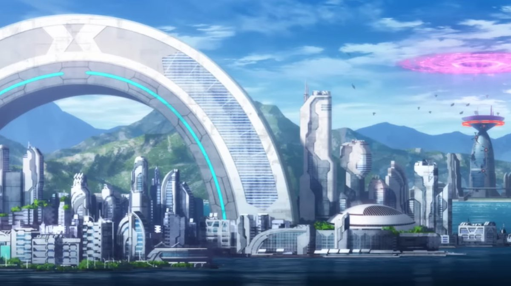
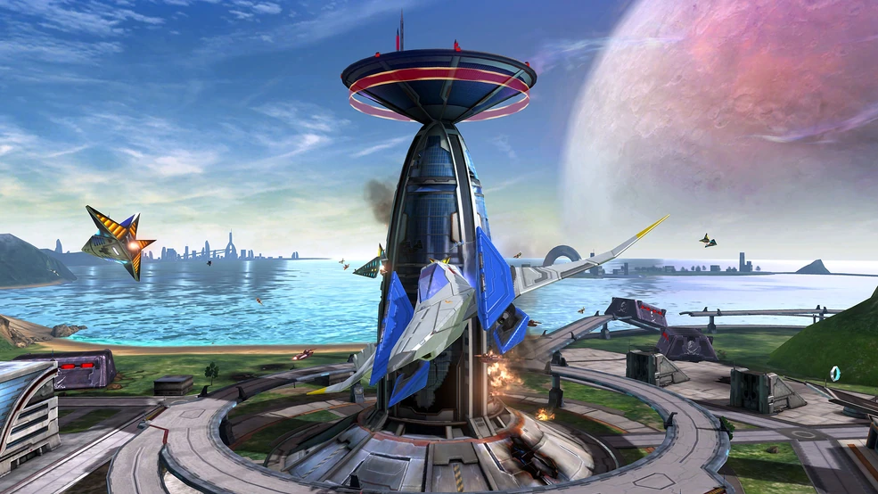
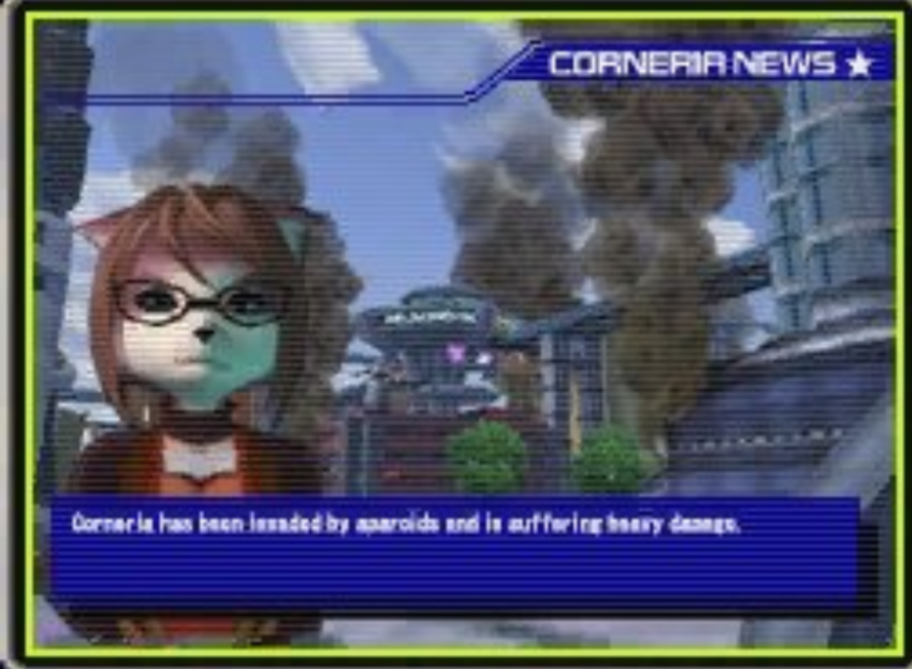
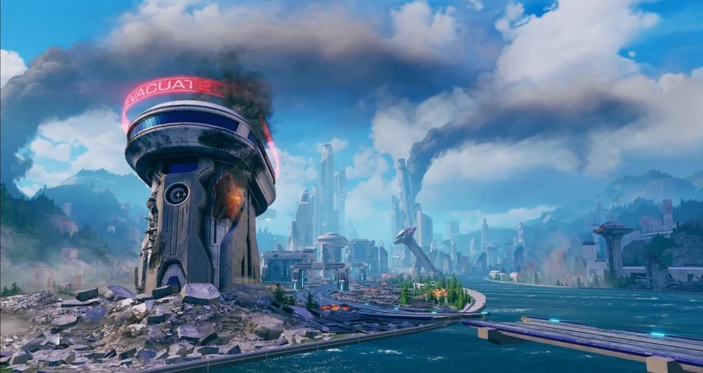

THE LAST
BASTION
OF ORDER
コーネリア連合共和国の政治・軍事・経済の中枢。ライラット星系最大の文明惑星にして、星系の平和と秩序を守り続ける要。
| DESIGNATION | CORNERIA / コーネリア |
| DOMAIN | コア・ワールド |
| LOCATION | LYLAT 4th — Sectorβ |
| PLANET TYPE | E1型 地球型惑星 |
| MOONS | 1 |
| PRIMARY STAR | ライラット・プライム |
| AVG TEMP | -15°C ～ +30°C |
| DAY / YEAR | 24.6H / 366D（星系標準時間の基準） |
| FACTION | コーネリア連合共和国 |
| CAPITAL | 星系首都 コーネリア・ギャラクティック・シティ |
| RESIDENT RACES | アヌビソイド 他 多種族 |

アンドルフが宣戦布告して来た！-グレートフォックス ペパー将軍からの極秘通信記録より-




OVERVIEW ─ 概要
「待っていたぞ、スターフォックス。もはや頼みは君たちだけだ。宇宙の平和を頼む！」― ペパー将軍、第2次ライラットウォーズ極秘通信記録より
コーネリア（Corneria）は、セクターβに位置するライラット星系第4惑星のE1型地球型惑星。コーネリア連合共和国の首都として星系の政治・軍事・経済の中枢を担い、その重要性から第10惑星プロスペローとならび「ライラット系の至宝」と称されている。星系最高水準の技術力を擁するコーネリア防衛軍（CDF）の総司令部が置かれ、長年にわたり星系の平和維持を支えてきた戦略拠点でもある。
ベノム帝国の侵攻により第2次ライラットウォーズが勃発した現在は、総力防衛の中枢として星系全土の作戦と補給をこの星が統括している。首都が今も変わらぬ朝を迎え続けていること自体が、戦時下の星系にとって最大の希望であると言ってよい。
GENESIS ─ 形成史
コーネリアの居住適性は、単一の幸運ではなく「重大な擾乱イベントの欠如」によって説明される。この星はインナーリムの物質帯で主星ライラット・プライムから適切な距離に形成され、ほぼ真円の軌道と適度な自転軸傾斜を獲得した後、数十億年にわたり軌道を変えるほどの事件を経験していない。同じ物質帯に形成されたベノムが外縁へ移動し、カタリナが原始天体との衝突を経た事実と対照的である。惑星科学の講義ではこの星を「星系で最も退屈な形成史を持つ惑星」と紹介する慣例があるが、安定こそ居住適性の第一条件である以上、これは否定的な評価ではない。
唯一の衛星も、この安定に寄与している。多くの衛星が大衝突の破片から生まれるのに対し、コーネリアの月「ダリス」は原始惑星円盤の中で本体と共に集積した「連れ星」型と考えられており、誕生以来ほとんど軌道を変えていない。本体と同じ物質帯から集積したためコーネリアのマントルに含まれる赤色鉱石「コーネリアズライト」を組成として共有しており、大気を持たない衛星表面ではこの鉱石が風化を免れて露出し続けている。星系で名高い「赤い月」の深紅は、両天体が同一起源であることの組成的な証拠と解釈されている。適切な距離を保つこの衛星は自転軸のふらつきを抑制し、緩やかな潮汐によって海洋の撹拌を続けてきた。ゆるやかな四季と安定した気候、生命を育んだ豊かな浅海の維持には、この衛星の寄与が大きいと評価されている。標準時と暦の基準に採用し得る規則的な自転・公転（地理の項を参照）も、外的擾乱を欠いた軌道史の産物である。
特徴的な地形は、長期の浸食作用の産物である。摩天楼の間に残るアーチ状の巨岩も、平原から斜めに突き出す剣状の山脈も、穏やかながら継続するプレート運動が隆起させた岩体を、海と風が数億年かけて削り出したものと解析されている。大規模な擾乱がなかったため、これらの地形は形成途中で破壊されることなく現存する。星系随一の肥沃な土壌も、適度な火山活動と広い浅海による長期の栄養蓄積で説明され、この星の豊かさは形成史の安定性そのものの反映と結論できる。
GEOGRAPHY ─ 地理・環境
本惑星は主星ライラット・プライムとの位置関係や周辺の重力均衡など数々の好条件が重なり、理想的な気候と利便性を併せ持つ（この条件が揃った経緯は形成史の項を参照）。大陸の大部分は緑豊かな平原と森林地帯に覆われ、広大な海洋が気候を穏やかに調整しているため四季の変化はゆるやかで、居住性は星系最高水準にある。安定した温暖な気候と肥沃な土壌はかつて星系の食料供給を支え、この星が「パンかご（Bread Basket）」と呼ばれる由来となった。
都市部は星系最大の人口を抱える大規模な文明圏を形成しているが、古来より自然環境との共生を重視した都市計画が貫かれてきたため、人工物と自然景観が調和した独特の都市風景が広がっている。摩天楼の間を縫うように残されたアーチ状の巨岩や、平原から斜めに突き出す剣状の山脈は、コーネリアを代表する景観として星系中に知られている。
首都コーネリアシティ──正式名称コーネリア・ギャラクティック・シティ──は政府機関と防衛司令部が集中する惑星最大の都市であり、ここを中心に星系全土を結ぶ交通・通信網が放射状に延びている。軌道上には複数の宇宙ステーションと防衛プラットフォームが周回し、唯一の衛星「ダリス」には早期警戒網の中枢が置かれている。
なお、この星の自転周期は24.6標準時間、公転周期は366日である──というより、星系の標準時と暦の方がコーネリアの自転・公転を基準に定められている。惑星間を移動する旅人や転属したばかりの新兵を悩ませる「惑星時差」と生涯無縁でいられることは、首都市民のささやかな特権と言われている。
HISTORY ─ 歴史
本惑星はその豊かさゆえに、歴史上幾度も争奪の的となってきた。共和国成立以前のライラット星系は数多の勢力と種族が安全と資源を奪い合う戦乱の時代にあり、この戦乱は少なく見積もっても240年間続いたと記録されている。コーネリアの肥沃な大陸もまた複数の国家によって分割統治されており、現在の行政区分に残るグランベル州やタイガーリーブス州といった州名は、この星を分け合った旧国家群の名残である。
後に「第1次ライラットウォーズ」と総称されるこの大戦争は、超兵器によって第6惑星が消滅した「ステファノーの戦い」を最後に停戦へと向かい、同じ過ちを二度と繰り返さないことを誓う憲章のもと、旧5国家を併合したコーネリア連合共和国が成立した。憲章第1条に掲げられた「質量破壊兵器の研究・保有の永久禁止」は、以来二百年を超えて共和国の背骨であり続けている。
続く復興期、コーネリアは名実ともに星系の中心となった。星系全土を結ぶワープドライブ航路網の建設が国策として進められ、三世代・約60年をかけて完成。漂流していた第6惑星の残骸をカタリナ軌道に集めて築いた最終防衛ライン「グレートウォール」の建設には半世紀近くが費やされた。首都は「戦争を知らない世代」の都として、二世紀にわたる繁栄を謳歌することになる。
もっともその平和は、完全に潔白なものではなかった。今から約60年前、評議会は教科書から都合の悪い歴史を消し去る法案を可決し、この星の子供たちが書き換えられた歴史を学んだ時代がある。この歪みが後の独立星系連合（IGA）戦役の遠因になったとする見方は根強く、戦役の終結後に法案は廃止された。現在ではステファノー忌の平和学習が必修に復帰している。
そして二百年を超える平和の後──宇宙歴3997年、辺境ベノムで発生した「アンドルフの反乱」を契機にベノム帝国が建国される。以後コーネリアは度重なる侵攻を受け続けており、CDFの決死の防衛が戦線を支えているものの、戦況は次第に押されているのが現状である。
SOCIETY ─ 住民・社会
首都コーネリアシティはアヌビソイドの比率が高いものの、基本的にはあらゆる種族が共存する星系最大の多種族社会である。小型種街区「リトル・キュータウン」や、アルフォイド移民が肩を寄せ合う都市外れの「ニッコータウン」（通称ステファノー街）など、種族ごとの顔を持つ街区も多い。星系最高学府コーネリア中央大学をはじめとする教育・研究機関が集中し、星系中から俊英が集まる「学びの都」としての性格も強い。
住民の多くは戦時下にあっても高い士気と責任感を保っている。首都の防衛軍士官学校はテスラー・コバーやベアー・ノウグッチーニをはじめ数多のエースパイロットを輩出してきた。一方で市民生活には戦争の影も落ちており、食料供給網の要衝が占領された影響から、主食を中心とした一部品目には開戦以来の配給制が敷かれている。それでも配給所の列が混乱に変わらないのは、この都の市民が「守られている」ことを疑っていないためである。
政体は評議会による合議制で、共和国憲章の第1条には質量破壊兵器の研究・保有を永久に禁じる条項が明記されている。これはステファノーの戦いの惨禍を二度と繰り返さないという建国の誓いそのものである。また評議会の上位には、建国以来の最高諮問機関として五大元老院が置かれている。仮面と長衣で素性を隠した5人の老人が何者なのかは、市民の誰もが知る「誰も答えを知らない謎」として親しまれている。
ECONOMY ─ 産業・経済
星系共通通貨スペースドル（SD）の発行と信用を支える中央金融機関が置かれ、この星は星系経済の心臓部としても機能している。毎年公刊される『星系経済白書』は辺境の商人にとっても値付けの羅針盤であり、白書の表紙に刷られるコーネリアシティの空撮写真は「今年も首都は無事である」という何よりの経済指標として読まれている。
産業の中心は行政・金融と研究開発だが、「パンかご」の名の由来となった広大な農業地帯は今も健在であり、星系の食料供給網が寸断された現在はその価値をむしろ高めている。開戦後は軍需への傾斜が急速に進み、造船・兵装関連だけが伸び続ける歪な好況──俗に「鉄の景気」と呼ばれる──が続いており、評議会は戦後の反動不況への備えを早くも議論し始めている。
MILITARY ─ 軍事
コーネリア防衛軍（CDF）の総司令部が置かれ、ペパー将軍の指揮の下、星系全域の防衛作戦がここから発令される。本星の防衛は衛星ダリスの前哨基地と連携する軌道プラットフォーム群、カタリナ宙域の最終防衛ライン「グレートウォール」、各宙域の駐留艦隊による多層構造で成り立っている。
またこの星は、共和国成立時に旧5国艦隊を統合して発足した星系統合艦隊スターブレードの母港でもある。開戦直後の「セクターζの惨劇」で同艦隊が主力の過半を失って以降、CDFは防衛線の再編を強いられており、要所の防衛をスターフォックスのような少数精鋭の傭兵部隊に頼る場面が増えている。
コーネリアへの侵攻は単なる領土攻撃にとどまらない。ベノム帝国にとっては星系の統治正統性を奪う象徴戦であり、コーネリア側にとっては市民生活・補給・同盟秩序を同時に守る総力防衛戦となる。この星が陥落すれば、星系の指揮系統と補給網は同時に崩壊する。なお最新の戦況分析は、5日後の超巨大兵器「グレートディッシュ」によるカタリナ来襲を高確度で予測している。迎撃計画の詳細は臨時閲覧権限LV.2以上で開示される。
ARCHIVES ─ 記録余話
ベノム帝国を率いるアンドルフは、元はコーネリア科学技術省の主任研究者兼科学省長官を務めた星系随一の天才科学者であった。憲章第1条に抵触する禁止兵器研究の発覚により辺境ベノムへ追放された経緯があり、追放を決定した評議会の議事録は現在も封印されたままである。
その皇帝の物語が始まったのも、実はこの星の下町である。ニッコータウンには若き日のアンドルフが16歳で開いた小さな工務店の跡が残っており、180年間止まっていた古い懐中時計をわずか3日で蘇らせた逸話は、今も界隈の語り草となっている。その1か月後、彼のもとには元老院直々のコーネリア中央大学入学許可が届いた。同大学の学生寮では飛び級で入学した年下の学生と同室になり、「アンディ」「ジジ」と呼び合う無二の親友となった──後の軍事防衛長官、Z・Z・ペパーである。
今日、星系のほぼ全ての戦闘機に標準搭載されているツインレーザーとプリズム式ザッパーの原特許が、アンドルフの父ヒットリン・ボウマンの手によるものであることも、歴史の皮肉な脚注としてしばしば言及される。一家が困窮の末に手放した特許は、やがて星系の標準技術となり──その息子の艦隊を、今は共和国の機体が同じ技術で迎え撃っている。
コーネリアシティの中央広場には、消滅した第6惑星の欠片が「不戦の碑」として安置されている。皮肉にも、同じ第6惑星の残骸から築かれたグレートウォールが、今もなおコーネリアの空を守り続けている。ステファノー忌には碑の前に献花の列が絶えず、その中にはいつも、仮面をつけた長衣の老人が一人混じっていると噂される。